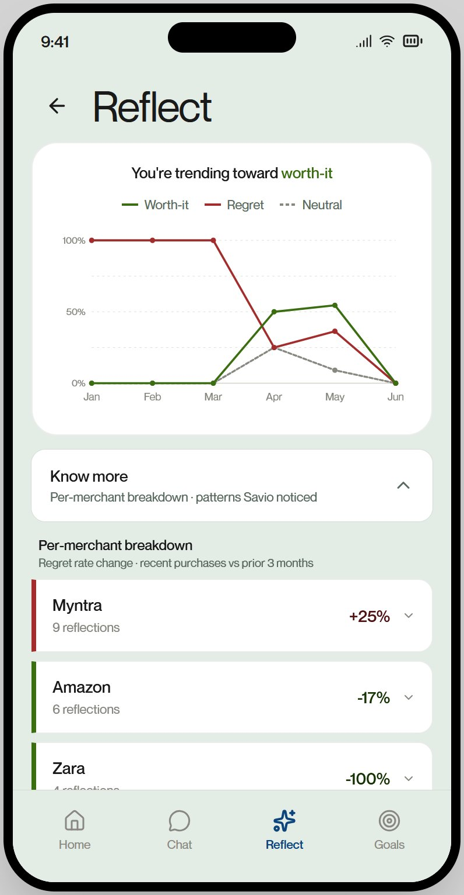

Every app here picks the same moment, and it is the wrong one
Budget apps assume you check a dashboard before you spend. Nobody does. Nobody stands in a fitting room and opens an app to ask whether ₹3,500 is sensible.
The ones that try harder intervene at the decision. Pop-ups, blockers, a warning at checkout. Those get uninstalled inside a week. Nobody wants to be told off by their phone while holding a card.
So the category is fighting for a moment where nobody is listening.
The moments that work are the seams. The 1st, when salary lands and you are already thinking about the month. The day a bonus arrives, before it dissolves into nothing. A few days after a purchase, when you know whether it was worth it.
Savio speaks only there. No mid-purchase interventions, ever. That was the first thing I locked and the hardest to hold. Building the checkout warning always feels like helping.
Three things I refused to build
The cushion as permission. Priya has ₹50,000 above her safety net. A naive assistant says “you can afford it, you have savings.” That makes every large purchase rationalisable, and the discipline collapses.
So the cushion enters a verdict as a cost, never a yes. A purchase that fits inside it moves from red toward amber. It never reaches green. The answer names the price: drops your cushion to ₹41,532, about a month to rebuild. She still decides. She decides seeing the bill.
Savings counted as spendable. ₹15,000 a month leaves Priya’s account into two SIPs. It is not a cost. It is her own money going to her own future. But it is not available either, because it auto-debits on payday. Both are true. The first version encoded only the first, and overstated her spending room by ₹15,000 every month.
Letting the model do arithmetic. More on that next.
Code computes. The model chooses what to say.
The rule is simple. If a number can be derived, derive it in code. Hand it to the model as a fixed value it must repeat.
Which raises the obvious question. Why use a model at all?
Not for variety, and not for warmth. Templates give you both. It is that the shape of a good answer changes with the question. A verdict might weigh a purchase against this month’s headroom, the cushion, the rebuild cost, a goal she is close to, and something she asked two turns ago. Which of those matter, and in what order, differs every time. One branch per combination is a tree nobody can maintain.
So the model does selection and ordering. The code decides what is true.

That split also shows where the model must be cut instead of guarded. It was emitting three different day counts in one session: 29, 30 and 31. An arithmetic checker would never catch that, because a wrong calendar is not a failed sum. The fix was to remove its chance to invent the number at all.
What it cannot be yet
Savio runs on Priya, a seeded user with six months of history. Nobody manages real money with it.
That is a legal boundary, not an unfinished feature. Touching real accounts in India means the Account Aggregator framework and RBI-registered partners. That is a months-long integration with obligations I cannot take on alone.
So what exists is the thinking, running end to end, against data honest enough to break it. A handful of people used the demo as beta testers, and found what I could not. One could not work out how to leave. Another never found the Reflect tab at all. The home screen said “safe to spend today” above a figure that was actually the whole month’s.
Five real fixes came out of that. What it cannot tell me is whether any of this changes what somebody does with their money. Beta testers on a demo are spending nothing.
That question needs users I am not allowed to have yet.